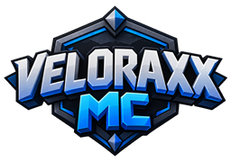
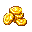
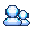
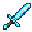
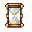

01 / TAB LIST & RANK SORTING
Tab List
Rank sorting, player information and custom glyphs, styled for VeloraxxMC.
Server configuration showcase
VeloraxxMC is my test server for menus, ranks, rewards and resource-pack work.
Rank sorting, player information and custom glyphs, styled for VeloraxxMC.
Player stats and balances from TAB, PlaceholderAPI and Vault, with custom icons.
LuckPerms handles staff and player prefixes across the server. EssentialsXChat formats the chat, with matching rank icons.
Font glyphs and item models used across menus, chat and player information.





Join and leave messages with rank prefixes and VMC branding.
Top 10 boards for coins, money, kills, deaths and playtime. Each also shows your own stats and rank.
Profiles, settings, crate previews and daily rewards in one player menu.
Solar and Aurora crates with separate themes, reward pools, custom keys and previews.
Daily claims, reward previews and streak milestones with custom icons and formatting.
Java / Paper plugin
In-game NPC editor for FancyNpcs on Paper.
Release 1.1.0Paper 1.21.6–1.21.11 / 26.1.2 / 26.2 / 26.3
FancyNpcs 2.12.1 · Java 25+
FancyNpcsGUI is an unofficial addon for FancyNpcs.
Tools I work with
A little about me
I'm a junior Java developer working on Minecraft plugins and server configuration. VeloraxxMC is where I test my setups and resource-pack work. FancyNpcsGUI is my main Java project.